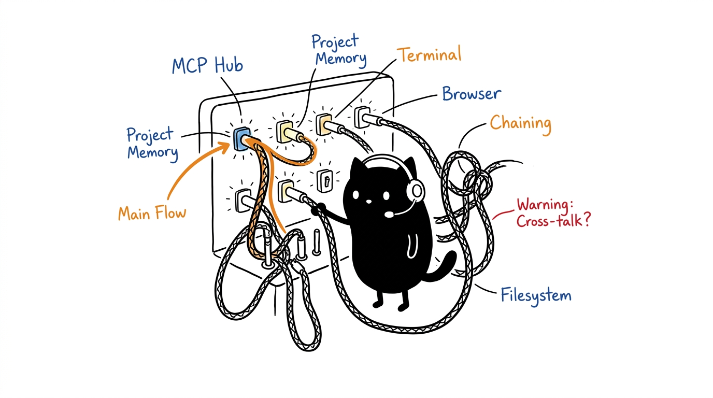

Meja Kerja Seluler HeLa MCP
Rangkaian distribusi 10 server Model Context Protocol (MCP) yang dapat direproduksi untuk agen AI. Menghadirkan orkestrasi dual-backbone (penalaran + grafik memori), transport stdio deterministik, dan konfigurasi klien per-profil di 8 harness agen kecerdasan buatan.

Tentang Ekosistem Ini
Sepuluh server khusus, masing-masing bertindak layaknya sel biologis dengan satu tugas utama. Dua backbone mengoordinasikannya: HeLa Mitosis (penalaran dan perutean tugas) dan HeLa Genome (grafik pengetahuan memori persisten). Delapan sel lainnya melengkapi kapabilitas berkas, eksekusi shell, proses PTY, riset data, browser web, desain UI, kontrol mobile Android, dan pemodelan 3D.
| Sel | ID Organel | Cakupan | Peran & Spesialisasi |
|---|---|---|---|
| Mitosis | hela-mitosis | core | Backbone orkestrasi & penalaran |
| Genome | hela-genome | core | Backbone status & grafik memori |
| Membrane | hela-membrane | core | Sistem berkas & pencarian rekursif |
| Nucleus | hela-nucleus | core | Batas eksekusi perintah shell |
| Ribosome | hela-ribosome | core | Harness proses & sesi PTY multiplex |
| Enzyme | hela-enzyme | core | Sintesis riset, Google CSE, arXiv & Wikipedia |
| Cytosol | hela-cytosol | core | Otomasi browser Playwright & inspeksi DOM |
| Phenotype | hela-phenotype | specialized | Token desain OKLCH, Tailwind & CSS |
| Receptor | hela-receptor | specialized | Otomasi perangkat Android via ADB |
| Plastid | hela-plastid | specialized | Pemodelan prosedural 3D Blender |
Katalog lengkap perkakas, entrypoint, dan repositori: 04 Arsitektur. Dinamai sebagai penghormatan kepada Henrietta Lacks (1920–1951): spesialisasi modular, replikasi deterministik, dan daya tahan jangka panjang.
Instalasi
Kebutuhan sistem: Node.js 20+ LTS, Git 2.25+, SQLite3. Opsional per sel: Playwright Chromium (cytosol), ADB (receptor), Blender 4+ (plastid).
git clone https://github.com/1999AZZAR/hela-mcp-ecosystem.git
cd hela-mcp-ecosystem
./setup.sh --profile dev-workspace --client opencodeSkrip setup.sh mengkloning, membangun, dan menuliskan konfigurasi klien untuk profil yang dipilih. Flag yang berguna: --system gui|headless, --reconfigure (hanya perbarui konfigurasi), --dev (ikuti branch alih-alih pin revisi), doctor (diagnostik).
Verifikasi
Tiga gerbang verifikasi, semuanya diharapkan berstatus hijau sebelum digunakan:
./setup.sh doctor # 10/10 [READY] Stdio JSON-RPC OK
npm test # 13 passed: 10 handshakes + 3 sinergi lintas-sel
npm run test:matrix # 80 passed: akurasi skema profil × klienLangkah Selanjutnya
- Pahami organismenya. Pelajari 04 Arsitektur untuk memahami model dual-backbone dan katalog alat per server.
- Pilih profil deployment. Delapan profil siap pakai (dari workstation desktop lengkap hingga CI headless) di 06 Profil & Konfigurasi — buat file konfigurasi klien menggunakan workbench interaktif.
- Jalankan alur kerja. Enam pipeline lintas-MCP (rekayasa fitur, riset, verifikasi UI, QA mobile, orkestrasi PTY, 3D) di 05 Alur Kerja.